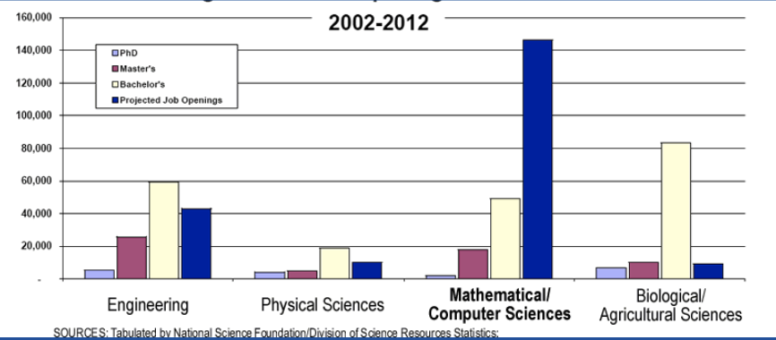
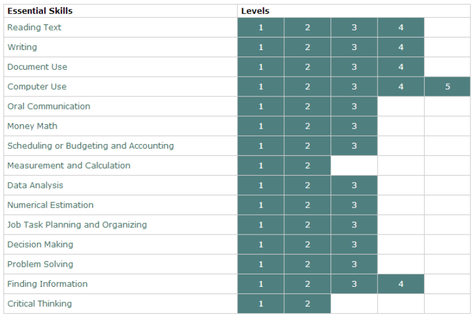

Environmental Stewardship Assignment
Keshav
Career Opportunities
- Describe trends in careers that require computer skills, using local and national sources(e.g., local newspaper, national newspaper, and career websites)
Computer skills have an increasing trend in the workplace as there is a huge increse in demand for people with knowledge in computers. The technology sector is branching out into new industries and is now appearing in other lines of work as well. For eample, there is not only computer related jobs in tech companies but also business, entertainement, and banking sectors. Eventualy, having a general idea about computers and programming will become a requirement to be able to work effectively in a job.
This can be seen through the large increase in jobs relating to computers, the amount of people hiring in 2010 increased by 275% for computer science jobs! As time goes on this number will continue to increase as it is already one of the fastest growing sectors of employment in the world.
- Report on postsecondary educational programs leading to careers in the field of information systems and computer science (e.g., institutions offering relevant programs, industry certifications, courses of study, entrance requirements, length of programs, costs)
| Field | Requirements |
|---|---|
| Software engineering | This field combines computer science, engineering, and math. Engineers create and customize many different types of software. Like computer programmers, they need strong programming skills. But they also need a deeper knowledge of computer hardware. They need to know the science behind these systems. They may still write code, but their focus is often split. They spend a lot of time working on algorithms and solving programming problems. To become a software engineer you need at least a bachelor in software engineering or a related subject such as mathmatics. The bachelor takess 4 years to complete. Some engineers choose to earn the Professional Engineer credential (P.Eng). To qualify you need a bachelors and many years of experience working. Main High School courses to be eligable are functions, calculus, sccience, physics, business and computer science. This program is offerend in universities such as UOttawa, UWaterloo, and CarletonU. There are many universities with this program, it is wise to look at which one offers the best program and plan your goals to get into that university. Most universities require a 95%+ average to have a competitive application. As this is the carrer which I am interested in, I must get a 95 average in grade 11 and 12 as well as all the prerequisite courses to be accepted. |
| Electrical Engineering | This field combines computer science, engineering, and math. Engineers create and customize many different types of software. Like computer programmers, they need strong programming skills. But they also need a deeper knowledge of computer hardware. They need to know the science behind these systems. They may still write code, but their focus is often split. They spend a lot of time working on algorithms and solving programming problems. You need at least a bachelor's degree in electrical engineering. A degree in a related subject, like electronics engineering, may also be suitable. It will take you 4 years to earn a bachelor's degree. It's always a good idea to keep learning after you start working. You can take ongoing education programs. Trade groups and equipment vendors often offer them. Courses will keep you updated on what's new in the field. Some of the required courses are functions, calculus, chemistry, physics, computer science and design. Generally, the cutoff average is around 80%-90%. Some local universities that offer this program are UOttawa, Carleton, Waterloo, and UToronto |
| Computer Security Specialist | computers can also hold valuable data. For example, they can hold personal records and passwords. They may even have classified government information. Information security analysts are computer specialists who protect this data. They make sure the data stored in an organization's computers is secure. Some people in this field are called systems security analysts. Others are called computer security specialists. Analysts' first task is to assess the risks to computer systems. Then, they develop plans and policies to address those risks. Their goal is to safeguard the company's files and technology. They also respond to security breaches. To get into this career, you should get a bachelor's degree. You can study computer science or computer programming. Information technology (IT) or a related subject are also good choices. A bachelor's degree takes 4 years to earn. You may also want to get a master's degree. You can study a computer-related field or business administration. This degree may help you move up in a company. You can find master's programs at many universities. It takes 2 years to earn a master's degree.Some employers prefer you to be certified. This shows your level of skill and knowledge. You can get certified by IT training and credentialing groups. One example is the International Information Systems Security Certification Consortium. They offer the Certified Information Systems Security Professional (CISSP) award. They offer other designations as well. Some IT vendors will certify you in their products. Microsoft is one example. Some of the required courses are functions, calculus, science, law, business, computer science and technology/networking. In post secondary, you would take the same courses as you would take to become a software enginner |
| Aerospace Engineer | All engineers take scientific theories and principles and apply them to real life. Aerospace engineers use these ideas when they design, create, and test various crafts. They work on aircraft, spacecraft, and missiles. They also supervise the production of these products. People in this field develop some of the most advanced technologies on the planet. They can design anything from lightweight gliders to giant, heavy airplanes. They build the satellites that we use in communications systems every day. They even designed and built the International Space Station. To work as an aerospace engineer, you need at least a bachelor's degree. You can choose to study aerospace engineering or a related subject. One example is mechanical engineering. While you're in high school, take courses in math, science, and English. Aerospace engineering and related programs are offered at many universities. These programs take about 4 years to complete. At some schools, you can get a degree in a related subject, and specialize in aerospace. The only local university that offers the aerospace engineering program is Carleton |
- Identify groups and programs that are available to support students who are interested in pursuing non-traditional career choices in computer-related fields
- Mentoring programs - Where a more experienced person helps to guide a less experienced person. This allows for fast feedback and opportunities to interact with people already in the feild. A disadvantage is that the mentor may not be as enthusiastic about being a mentor as the student. This is a program available at the university of British Columbia
- Co-op - When a student works at a real company as they study. They earn money as well as real work experience. This program usually ends with the student being hired full time at the company they co-oped at (Considering they were good at the job). A disadvantage could be that it is very competitive and not everyone gets into the program. This is available at universities such as Waterloo
- Shopify - A program where there is a small group of students who work with computers and other adults who have experience in the job. This is a prestigious program that has very good benifits in the long term such as alot of work experience, networking opportunities and it lets you figure out what intrests you. The disadvantage is that it is very hard to get into.
- Identify the Essential Skills and Work Habits that are important for success in computer studies, as defined in the Ontario Skills Passport.
The skills that are important for a career in computer studies are reading, writing, computer knowledge, oral communication, math, accounting, calculation/measurement, data analysis, estimation, planning, decision making, problem solving, critical thinking and information gathering. Below is a graph of these skills.
